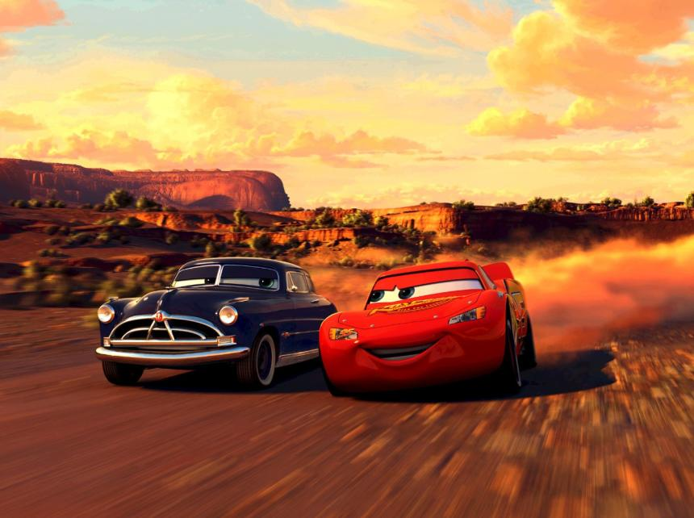

Cars


|
|||
|
|||
| La película Cars está ambientada en un mundo poblado enteramente por coches parlantes antropomórficos. Sigue a Lightning McQueen, un auto deportivo novato que, de camino a la carrera más importante de su vida, se queda varado en un pueblo llamado Radiator Springs. Allí, aprende que la vida no es solo sobre la victoria, sino también sobre el viaje | |||
|
|
 | |
| Cars es una película de comedia deportiva animada por ordenador de 2006 producida por Pixar Animation Studios y lanzada por Walt Disney Pictures. Fue dirigida por John Lasseter a partir de un guion propio junto con Daniel Fogelman, Joseph Henry Ranft, Kiel Murray, Philip Lorin y Jorgen Klubien, y una historia ideada más en profundidad por Lasseter y Ranft. | |||